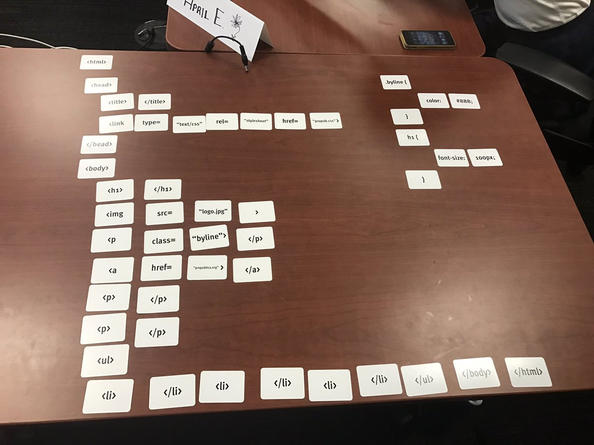
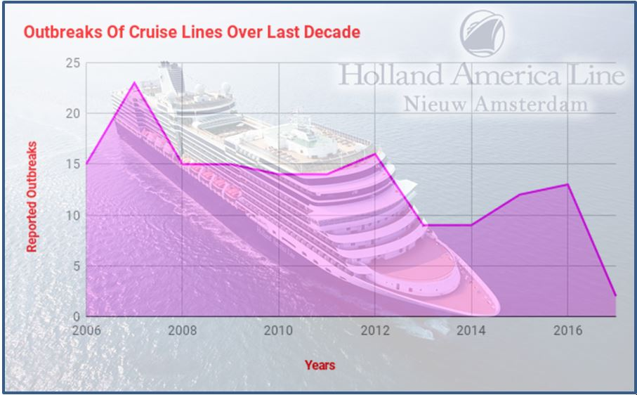
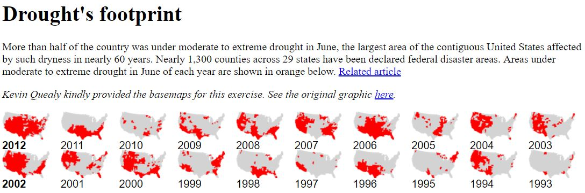

Simple jQuery/JavaScript Exercise Showing Taxis Flooded Post-Hurricane Sandy
But First ... Learning HTML With Card Games
Taking puzzles to a new level @ProPublica with @TasnimS #DataInstitute. We solved the code!
— Sandra Gomez-Aceves (@SanGomez_News) June 13, 2017Spreadsheets: Line Graphs vs. Bar Graphs
In a CDC dataset of outbreaks on cruise ships, we learned a bar graph would have been more accurate because of the limited data points (years), even though it's a continuous variable.
Additionally, visually, the image is misleading and suggests the graph is only in reference to outbreaks on Holland America, when it actually includes all reported lines.
Learning How/When To Float And Position In CSS
